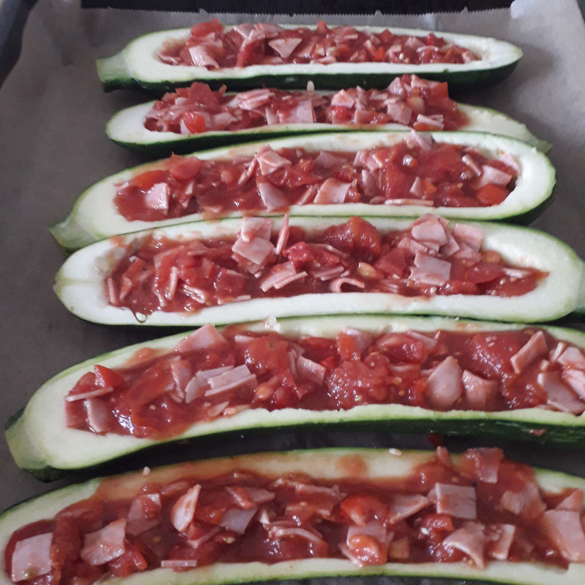

Zutaten für 3 Portionen
- 3 Zucchinis mittelgroß
- 1 Dose gehackte Tomaten
- 10 Cherrytomaten
- 200g Schinken (in Würfel geschnitten)
- 200g geriebener Gouda Käse
Zubereitung
Die Zucchini längs in zwei Teile schneiden und mit einem Löffel aushöhlen. Das Cherrytomaten klein schneiden und mit den Dosentomaten und Schinkenwürfeln vermischen. Das Ganze nach belieben würzen und in die Aushöhlung geben. Den Käse darauf verteilen und für mind. 30 Minuten bei 180° im Ofen backen bis sich der Käse goldgelb färbt.